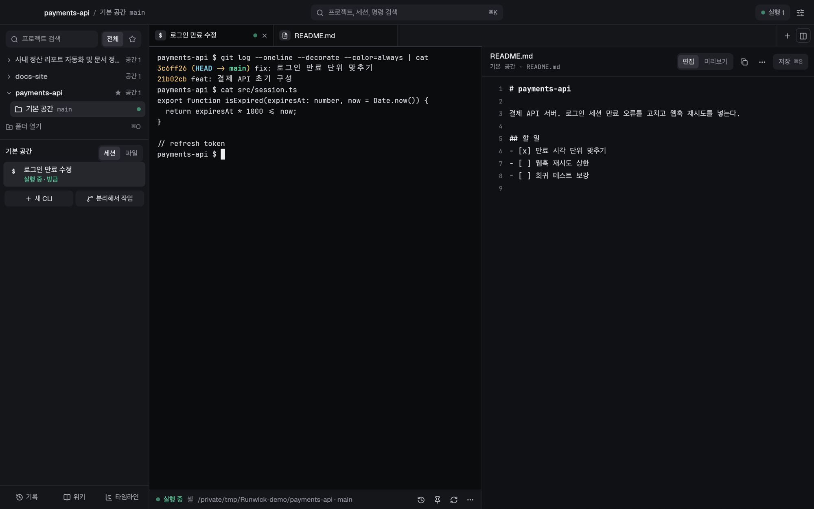
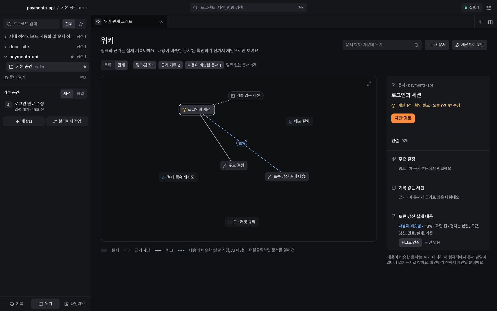
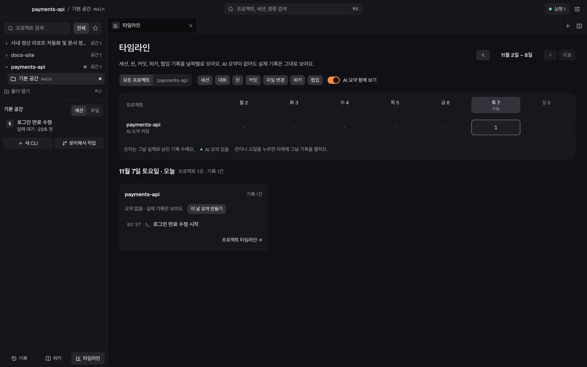

실행 유지
창을 닫아도 CLI는 계속 실행됩니다. 메뉴 막대에서 상태를 확인하고, 다시 열면 같은 실행에 연결됩니다.
macOS를 위한 AI CLI 작업실
Claude Code, Codex, 셸을 프로젝트별로 오가세요. 익숙한 CLI에서 하던 일을 이어 가고, 대화와 파일은 한곳에 남겨 두세요.

쓰던 CLI 그대로. 작업에 필요한 맥락을 곁에.
작업실 안에서
터미널, 기록, 문서를 프로젝트별로 연결합니다. 폴더 하나를 열면 기본 공간에서 바로 시작할 수 있습니다.
창을 닫아도 CLI는 계속 실행됩니다. 메뉴 막대에서 상태를 확인하고, 다시 열면 같은 실행에 연결됩니다.
지난 대화를 한국어 부분 검색으로 찾으세요. 다시 볼 메시지와 터미널 발췌는 핀으로 남길 수 있습니다.
파일 트리에서 찾고, Markdown과 텍스트를 편집하고 미리 보세요. CLI와 편집이 겹치면 3열 비교로 확인합니다.
문서의 연결은 위키 그래프로, 작업의 흐름은 날짜별 타임라인으로. AI 정리는 프로젝트별로 켜고, 배터리에서는 보류합니다.
runwick delegate로 다른 CLI에 일을 맡기고 결과를 받으세요. 필요하면 작업자를 살펴보거나 직접 대화할 수 있습니다.
환경변수는 공통 설정으로 관리하고, 비밀값은 macOS 키체인에 둡니다. 설정이 바뀌어도 같은 대화를 유지하며 새로고침합니다.
기록, 핀, 위키, 설정을 비공개 저장소에 백업하고 다른 컴퓨터에서 이어 쓰세요. 설정의 비밀값은 동기화에서 제외합니다.
SSH로 다른 Mac의 Runwick에 연결하세요. 같은 사이드바에서 원격 작업 공간을 열고, 각 기기가 자신의 실행을 유지합니다.
쌓이는 맥락
무엇을 결정했고 어디까지 했는지, 기록으로 돌아와 이어 가세요.
위키 문서와 근거 기록을 그래프로 살펴보고, AI가 제안한 변경은 검토한 뒤 반영합니다.

세션, 핀, 커밋, 위키와 협업 기록을 날짜별로 모아 봅니다. AI 요약이 없어도 실제 기록은 남습니다.

사용 방법
프로젝트 폴더를 열면 기본 작업 공간이 준비됩니다. Git 저장소가 아닌 폴더도 사용할 수 있습니다.
설치한 Claude Code, Codex, 셸 중에서 고르세요. 익숙한 터미널에서 시작하고, 필요할 때 작업을 나누세요.
진행 중인 작업은 그대로 두고 창을 닫으세요. 다시 열면 같은 실행에 연결되어 하던 일을 이어 갑니다.
재부팅 후에는 기록과 마지막 화면을 복원합니다. 다시 실행할 세션은 직접 선택합니다.
설치
macOS 11 이상. 사용할 AI CLI는 별도로 설치하고 로그인해 주세요.
최신 릴리스에서 Mac에 맞는 배포 파일을 받으세요.
다운로드한 파일을 열고 Runwick.app을 응용 프로그램 폴더로 옮기세요.
Finder에서 Runwick을 우클릭한 뒤 열기를 선택하세요. macOS가 계속 차단한다면 아래 안내를 확인하세요.
현재 번들은 ad-hoc 서명이며 Apple 공증은 아직 적용되지 않았습니다. 공식 GitHub 릴리스에서 받은 앱인지 확인한 뒤, 터미널에서 이 앱의 격리 속성만 제거할 수 있습니다.
xattr -dr com.apple.quarantine /Applications/Runwick.app명령을 실행한 다음 응용 프로그램 폴더에서 Runwick을 다시 여세요.
Rust stable과 Xcode 또는 Command Line Tools가 필요합니다. 저장소를 받은 뒤 아래 명령을 실행하세요.
sh scripts/bundle-macos.sh아니요. Rust와 egui로 만든 macOS용 네이티브 앱입니다. CLI는 앱 안의 터미널에서 원래 화면 그대로 실행됩니다.
아니요. 비밀 환경변수 값은 macOS 키체인에 두고 백업·동기화에서 제외합니다. 기록과 위키 등은 연결한 비공개 저장소로 동기화하므로, 대화나 문서에 직접 적은 민감한 내용은 따로 확인해 주세요.
창만 닫으면 CLI는 계속 실행되고 메뉴 막대에서 상태를 볼 수 있습니다. 작업을 멈추려면 ‘작업까지 종료’를 선택하세요. 컴퓨터를 재부팅한 뒤에는 기록과 화면을 복원하고, 재개할 세션을 직접 고릅니다.
Claude Code, Codex, 일반 셸을 지원합니다. 각 AI CLI의 설치와 로그인은 별도로 필요하며, 해당 서비스의 이용 조건과 요금이 적용됩니다.
GitHub 백업·동기화로 기록을 다른 컴퓨터에서 이어 쓸 수 있습니다. SSH로 다른 Mac의 Runwick에 연결하면 그 기기의 작업 공간도 열 수 있습니다. 원격 실행은 구현되어 있지만 실제 두 Mac 사이의 연결 검증은 아직 남아 있습니다.
Runwick은 무료 오픈소스이며 MIT 라이선스로 공개합니다. 사용하는 AI CLI 서비스의 비용은 별도입니다.